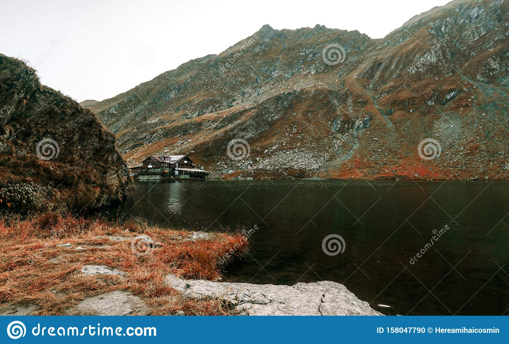

KIKA kappers is dé kapperszaak van Koudekerk aan den Rijn. Ons team van 5 entdousiaste kappers staat
klaar om jou een nieuwe look te geven. Wij luisteren naar jouw wensen of vertellen je over de nieuwste
trends.
Samen met jou gaan wij op zoek naar de look die jou vol trots de deur weer uit doet stappen. Wij hebben
echt
hart voor ons werk en dat is ook in de salon goed te merken. Er hangt een gezellige sfeer en er staat
altijd
koffie, tdee en limonade klaar.
Wij zijn professionals in ons vak. Met trots vertellen wij over onze expertise.
Jou laten stralen is ons doel! Daarom bieden wij een gratis service aan: Het bijwerken van jouw pony of bakkenbaarden en nekharen.
Onze specialiteit is haarkleuring. Wordt het een verfrissend kleurtje of kies je voor gewaagd? Informeer naar de mogelijkheden.
Jouw bruiloft is de mooiste dag van je leven. Wij zorgen dat jij een onvergetelijke dag hebt, door jou te laten stralen!
Ook de kleinste klantjes zijn bij ons van harte welkom. Er is altijd limonade en een snoepje voor na het knippen.
Voor meer informatie en de voorwaarden
Wij voldoen aan de AVG wet.